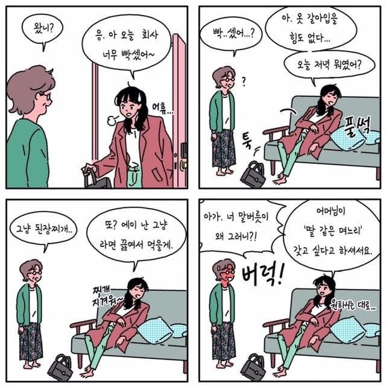
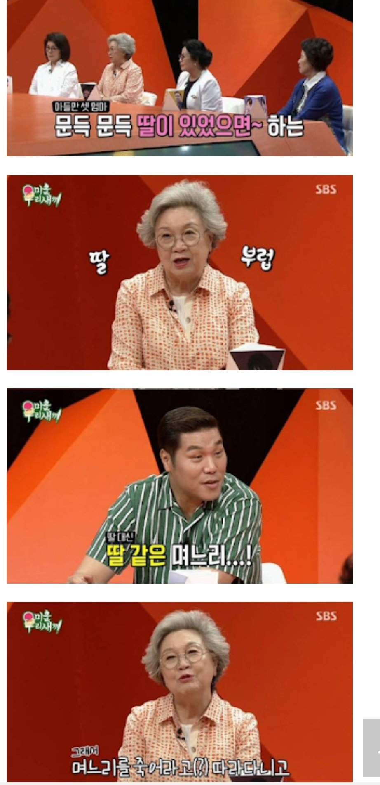
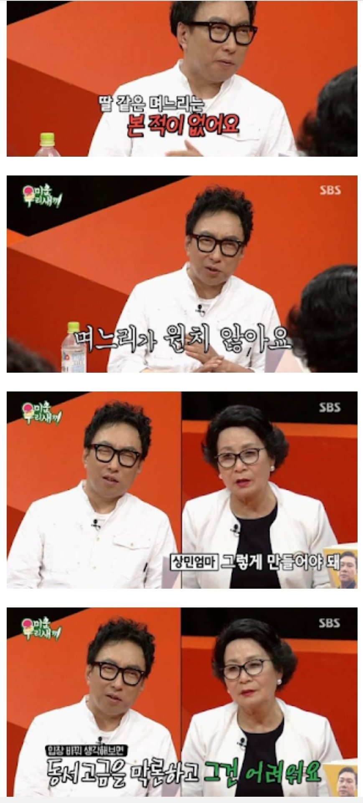
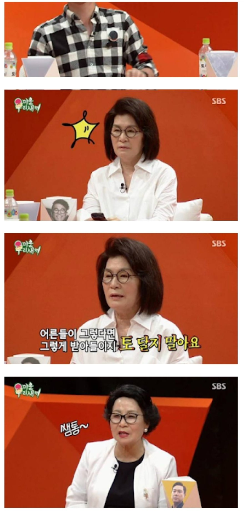
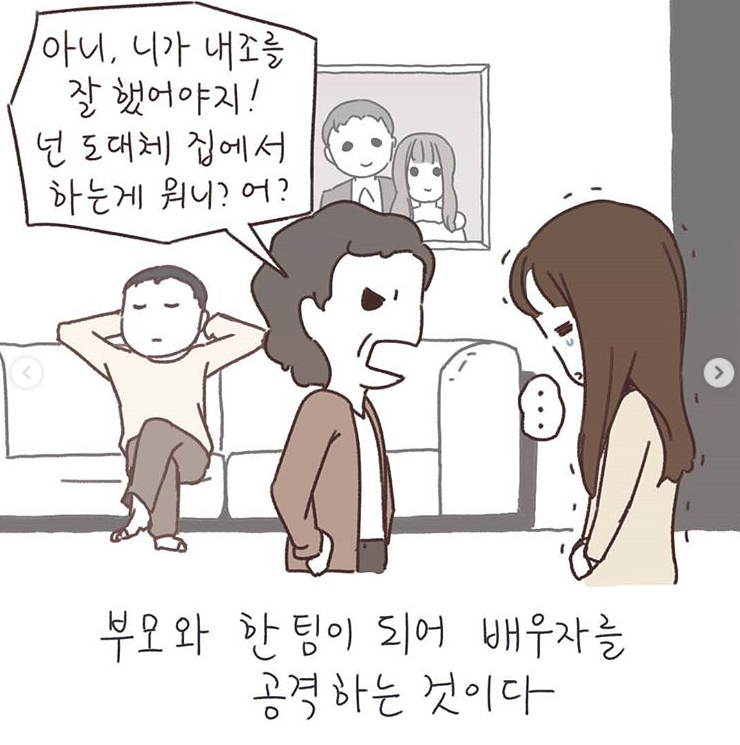

"딸 같은 며느리"란 없다
게시: 2020-06-04T06:30:05+09:00
웹질 하다 재미있는 사진을 본 김에 퍼왔어요.

(Source : https://twitter.com/OnePenny0605/status/1265220599430803456 )
우리나라 시부모님들 중에는 "아들의 결혼이란 딸 같은 며느리를 새로 집에 들여오는 것"이라고 생각하는 경우가 많은 것 같은데, 그게 모든 비극의 씨앗이라는 생각이 듭니다.
아들의 결혼에 대한 제대로 된 개념은 "아들이 자기 짝을 찾아 부모 곁을 떠나는 것"입니다.
우리 속담에도 "자식도 품 안에 자식"이라는 말이 있듯이, 다 커서 독립해야 하는 자식을 언제까지 자기 곁에 묶어 두려는 것은 부모의 과욕일 뿐입니다.
어떤 분은 "서구와는 달리 우리나라에서는 자식이 완전히 독립하지 못하는 경우가 많기 때문에 어쩔 수 없다" 라고 하시지만, 제 생각은 다릅니다. 독립이라는 것이 무슨 의미인지는 잘 모르겠으나, 그게 경제적 독립을 뜻하는 것이라면 자식을 완전히 독립 못 시키는 것은 자식을 잘못 키운 것입니다. 그런 자식은 결혼을 시키면 안 됩니다. 그 배우자인 다른 집 귀한 자식에게 민폐만 끼치는 셈이 되니까요. 돈을 많이 벌어야 한다는 이야기가 아닙니다. 부족하면 부족한대로 그에 맞추어 살 줄 알아야 한다는 이야기입니다. 만약 부모가 경제적 지원을 해준다고 해도, 부모 자식 간에 돈을 주고 정을 요구하는 거래를 하는 것은 무척 볼썽사나운 일입니다.
덧붙여, "미우새 자식들은 결혼을 못하고 박명수는 한 이유를 알겠다" 라는 사진들입니다. 제목에 공감이 가네요.
  
(Source : https://twitter.com/OnePenny0605/status/1265220599430803456 )
이왕 퍼온 김에 최근에 본 이혼전문 변호사 최유나님이 그린 만화 중 한 장면...
원래 추석 같은 명절 직후에 이혼 상담이 크게 늘어나는데, 이유야 여러분들이 아시는 독박가사, 대리효도, 다른 며느리/사위와의 비교 등등 많지만, 그 중에서도 "정말 치유되기 어려운 상처"란 바로 아래와 같이 "남편(와이프)이 그 부모와 한편이 되어 와이프(남편)을 공격하는 것"이라고 합니다.
이 부분에서 제 어머니께서는 정말 존경스러운 분인데, 제게 이렇게 가르치셨습니다.
"시부모와 네 와이프 사이에 분란이 생기면 넌 무조건 네 와이프 편을 들어야 한다. 그 사이에서 중재를 한다는 것은 사실상 부모 편을 드는 것이고 그건 부부 간에 씻을 수 없는 상처를 만드는 일이다. 무조건 남편은 와이프 편을 들어야 한다. 효자 아들이란 자기 와이프와 행복하게 잘 사는 아들이 최고 효자 아들이다."
절대로 아래와 같은 상황을 안 만들도록 노력합시다.

(Source : https://www.instagram.com/p/BoOHTQHhzYT/ )